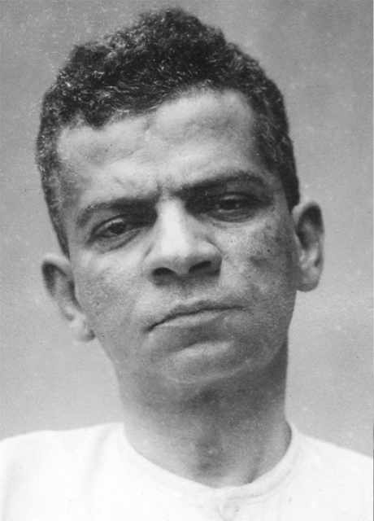

Lima Barreto
Lima Barreto: uma voz à margem
Lima Barreto colaborou em vários jornais como jornalista e cronista. Em 1909, publicou o romance Recordações do escrivão Isaías Caminha e, em 1914, iniciou a publicação de Triste fim de Policarpo Quaresma, lançado como folhetim. Sua obra foi recebida de forma negativa pela crítica, que o acusou de usar uma linguagem displicente e pouco acadêmica, fato que, anos depois, foi reavaliado como positivo pelos modernistas.

Afonso Henriques de Lima Barreto nasceu no Rio de Janeiro (RJ), em 1881. De origem humilde – o pai era tipógrafo e a mãe, professora primária, sendo ambos mestiços –, ficou órfão de mãe aos 7 anos e conseguiu, a custo, completar os estudos básicos e ingressar na Escola Politécnica do Rio de Janeiro, mas teve de abandoná-la para cuidar dos irmãos quando o pai enlouqueceu. O escritor morreu precocemente, em 1922, aos 41 anos, vítima de um colapso cardíaco.
Lima Barreto enfrentou não apenas o preconceito racial, mas também discriminações sociais, em consequência do vício pelo álcool e da loucura do pai, experiências essas que despertaram no autor uma viva consciência da situação daqueles que viviam à margem na sociedade. Sua obra denota esse aspecto na opção por personagens suburbanos que habitavam a periferia carioca e também ao lançar à cidade do Rio de Janeiro um olhar crítico, que se contrapunha ao otimismo exacerbado da Belle Époque.
Segundo o crítico literário Antonio Arnoni Prado:
[…] a obra de Lima Barreto nos revela, de um lado, o autor em que se chocam, frente a frente, a visão do novo e a permanência do velho, e, de outro, o intelectual que traz consigo a voz do inconformismo apontando para uma ruptura com a tradição, através de atitudes claramente favoráveis à renovação que viria a partir de 1922, com a Semana de Arte Moderna.
A sua posição sempre favorável à liberdade do escritor e à necessidade de aproximá-lo das camadas marginalizadas repercutiu intensamente no surgimento de uma literatura de contestação, apropriada ao novo clima social que caracterizava, no começo do século, os grandes aglomerados urbanos.
Mais ainda: paralela a essa rebeldia antielitista, a tentativa de formular teoricamente uma literatura social e politicamente militante, voltada para a urgência do cotidiano em mudança e ao mesmo tempo inspirada na redenção do homem oprimido, transforma a sua obra numa das contribuições mais importantes das letras brasileiras deste século.
PRADO, Antonio Arnoni. Lima Barreto. 2. ed. São Paulo: Nova Cultural, 1988. p. 13. (Literatura Comentada).
A variedade temática presente na obra de Lima Barreto, aliada à renovação linguística e ao tom jocoso de muitos de seus escritos, confirma a modernidade do autor, considerado pela crítica o pré-modernista mais próximo da renovação literária que se daria no Brasil com a Semana de 1922.
Entre as principais obras de Lima Barreto estão, além dos romances Recordações do escrivão Isaías Caminha e Triste fim de Policarpo Quaresma, Histórias e sonhos (1920), a sátira Os Bruzundangas (1923) e o romance Clara dos Anjos (1948), os dois últimos publicados postumamente.
Nacionalismo e ingenuidade: o triste fim de um patriota
O romance Triste fim de Policarpo Quaresma está entre as obras-primas da literatura brasileira. O enredo gira em torno do personagem-título, funcionário público que dedica um amor intenso ao Brasil e luta para que o país alcance um lugar de destaque no panorama mundial e seja reconhecido por suas grandezas e não por suas falhas, as quais busca solucionar. As três partes em que se divide o romance tratam de três questões centrais para se discutir o Brasil no início do século XX: a cultura nacional, a estrutura agrária e a situação política.
Na primeira parte, Policarpo Quaresma tem um plano cultural para o Brasil: pretende desenvolver o patriotismo, adotando o tupi-guarani como língua oficial. Essa seria, segundo ele, a verdadeira língua nacional, capaz de expressar a brasilidade em contraposição ao europeísmo representado pela língua portuguesa. Depois de enviar uma petição à Câmara, ele é ridicularizado, o que culmina com sua internação num hospício em decorrência de um esgotamento nervoso. Após receber alta e ser aposentado, Quaresma resolve mudar-se para o sítio de nome Sossego, e tem início a segunda parte do romance, em que o plano do personagem é desenvolver a agricultura do país.
Ele pretende provar que é legítimo o entendimento que Pero Vaz de Caminha expressa em sua carta a Portugal por meio da célebre frase “No Brasil, em se plantando tudo dá.”. O que falta aos agricultores é um pouco mais de dedicação e organização. Novamente, ele se depara com dificuldades: a infraestrutura agrária deficiente do país e a falta de apoio governamental aos pequenos produtores.
Na terceira parte, Quaresma recebe a notícia da eclosão da Revolta da Armada e prontamente regressa para o Rio de Janeiro, a fim de apoiar o governo e entregar a Floriano Peixoto um documento em que relaciona as medidas a serem tomadas para resolver os problemas do país. Atuando voluntariamente como carcereiro, entra em contato com as atrocidades que estão sendo cometidas em nome da “defesa da ordem”: pessoas mortas, prisões aleatórias, violência intimidadora. Cresce nele o sentimento de injustiça e falência: os sonhos que alimentou em relação ao Brasil se frustram. Depois de denunciar essas ações, Quaresma é preso e condenado ao fuzilamento. Ironicamente, a ordem para sua execução parte do próprio Floriano Peixoto, a quem Quaresma devotara admiração e prestara apoio incondicional.
Triste fim de Policarpo Quaresma encarna a crítica à República e ao projeto civilizatório falido. Enquanto muitos dos personagens que cercam o protagonista não têm consistência moral ou profissional, mas, mesmo assim, são bem-sucedidos e contam com respeitabilidade social, o bem-intencionado Quaresma não recebe da República mais do que sucessivas punições.
Ao mesmo tempo que direciona uma crítica mordaz ao Brasil republicano, Lima Barreto recrimina em seu romance o ridículo e o patético do nacionalismo caracterizado pelo fanatismo. Espécie de Dom Quixote brasileiro, Quaresma termina por se tornar vítima de seus sonhos e de sua ingenuidade. Seu trágico final só reforça a ideia de que o projeto republicano traiu suas promessas: a realidade é o inverso do que se propunha, uma sociedade injusta em que as desigualdades prevalecem.
A Revolta da Armada teve início em 1893, quando a esquadra chefiada pelo almirante Custódio de Melo (ex-ministro da Marinha durante o governo de Floriano Peixoto e quem forçou a renúncia de Deodoro da Fonseca, em 1891) sublevou-se contra o governo.
A revolta refletia o descontentamento da Marinha, que acreditava contar com menos prestígio governamental do que o Exército. Os revoltosos tiveram pouco apoio político e popular no Rio de Janeiro, o que não impediu que houvesse sangrenta batalha na Ponta da Armação, em Niterói. Em março de 1894, Floriano Peixoto, apoiado pelo Exército e pelo Partido Republicano Paulista, conseguiu reprimir o movimento, depois da compra de novos navios de guerra que ficaram conhecidos como “frota de papel”.
Trecho de Triste fim de Policarpo Quaresma
O trecho que você vai ler a seguir pertence ao capítulo II da segunda parte de Triste fim de Policarpo Quaresma, intitulado “Golias”. No trecho, Quaresma recebe a visita de Olga, sua afilhada, do marido dela e de Ricardo Coração dos Outros, um violonista com quem Quaresma tinha tomado aulas de violão, instrumento que considerava tipicamente brasileiro. Olga voltava de um passeio ao Carico, onde havia uma cachoeira, a duas léguas do sítio do padrinho.
Texto I
[…]
O que mais a impressionou no passeio foi a miséria geral, a falta de cultivo, a pobreza das casas, o ar triste, abatido da gente pobre. Educada na cidade, ela tinha dos roceiros ideia de que eram felizes, saudáveis e alegres. Havendo tanto barro, tanta água, por que as casas não eram de tijolos e não tinham telhas? Era sempre aquele sapê sinistro e aquele “sopapo” que deixava ver a trama de varas, como o esqueleto de um doente. Por que, ao redor dessas casas, não havia culturas, uma horta, um pomar? Não seria tão fácil, trabalho de horas? E não havia gado, nem grande nem pequeno. Era raro uma cabra, um carneiro. Por quê? Mesmo nas fazendas, o espetáculo não era mais animador. Todas soturnas, baixas, quase sem o pomar olente1 e a horta suculenta. A não ser o café e um milharal, aqui e ali, ela não pôde ver outra lavoura, outra indústria agrícola. Não podia ser preguiça só ou indolência. Para o seu gasto, para uso próprio, o homem tem sempre energia para trabalhar relativamente. Na África, na Índia, na Cochinchina, em toda a parte, os casais, as famílias, as tribos, plantam um pouco algumas cousas para eles. Seria a terra? Que seria? E todas essas questões desafiavam a sua curiosidade, o seu desejo de saber, e também a sua piedade e simpatia por aqueles párias, maltrapilhos, mal alojados, talvez com fome, sorumbáticos!…
1 olente: cheiroso. sorumbático: triste, sombrio.
Pensou em ser homem. Se o fosse passaria ali e em outras localidades meses e anos, indagaria, observaria e com certeza havia de encontrar o motivo e o remédio. […]
Como no dia seguinte fosse passear ao roçado do padrinho, aproveitou a ocasião para interrogar a respeito o tagarela Felizardo. […]
[…]
— Bons-dias, “sá dona”.
— Então trabalha-se muito, Felizardo?
— O que se pode.
— Estive ontem no Carico, bonito lugar… Onde é que você mora, Felizardo?
— É doutra banda, na estrada da vila.
— É grande o sítio de você?
— Tem alguma terra, sim, senhora, “sá dona”.
— Você por que não planta para você?
— “Quá sá dona!” O que é que a gente come?
— O que plantar ou aquilo que a plantação der em dinheiro.
— “Sá dona tá” pensando uma cousa e a cousa é outra. Enquanto planta cresce, e então? “Quá, sá dona”, não é assim.
Deu uma machadada; o tronco escapou; colocou-o melhor no picador e, antes de desferir o machado, ainda disse:
— Terra não é nossa… E “frumiga”?… Nós não “tem” ferramenta… isso é bom para italiano ou “alemão”, que o governo dá tudo… Governo não gosta de nós…
Desferiu o machado, firme, seguro; e o rugoso tronco se abriu em duas partes, quase iguais, de um claro amarelado, onde o cerne escuro começava a aparecer.
Ela voltou querendo afastar do espírito aquele desacordo que o camarada indicara, mas não pôde. Era certo. Pela primeira vez notava que o self-help do Governo era só para os nacionais; para os outros todos os auxílios e facilidades, não contando com a sua anterior educação e apoio dos patrícios.
E a terra não era dele? Mas de quem era, então, tanta terra abandonada que se encontrava por aí? Ela vira até fazendas fechadas, com as casas em ruínas… Por que esse acaparamento2, esses latifúndios inúteis e improdutivos?
2 acaparamento: monopólio.
A fraqueza de atenção não lhe permitiu pensar mais no problema. Foi vindo para casa, tanto mais que era hora de jantar e a fome lhe chegava.
Encontrou o marido e o padrinho a conversar. Aquele perdera um pouco da sua morgue3; havia mesmo ocasião em que era até natural. Quando ela chegou, o padrinho exclamava:
3 morgue: necrotério, ar fúnebre.
— Adubos! É lá possível que um brasileiro tenha tal ideia! Pois se temos as terras mais férteis do mundo! — Mas se esgotam, major, observou o doutor.
Dona Adelaide, calada, seguia com atenção o crochet que estava fazendo; Ricardo ouvia, com os olhos arregalados; e Olga intrometeu-se na conversa:
— Que zanga é essa, padrinho?
— É teu marido que quer convencer-me que as nossas terras precisam de adubos… Isto é até uma injúria!
— Pois fique certo, major, se eu fosse o senhor, aduziu o doutor, ensaiava uns fosfatos…
— Decerto, major, obtemperou Ricardo. Eu, quando comecei a tocar violão, não queria aprender música… Qual música! Qual nada! A inspiração basta!… Hoje vejo que é preciso… É assim, resumia ele.
Todos se entreolharam, exceto Quaresma, que logo disse com toda a força d’alma:
— Senhor doutor, o Brasil é o país mais fértil do mundo, é o mais bem-dotado e as suas terras não precisam “empréstimos” para dar sustento ao homem. Fique certo!
— Há mais férteis, major, avançou o doutor. — Onde?
— Na Europa.
— Na Europa!
— Sim, na Europa. As terras negras da Rússia, por exemplo.
O major considerou o rapaz durante algum tempo e exclamou triunfante: — O senhor não é patriota! Esses moços…
O jantar correu mais calmo. Ricardo fez ainda algumas considerações sobre o violão. À noite, o menestrel4 cantou a sua última produção: “Os Lábios da Carola.” […] Olga tocou no velho piano de Dona Adelaide; e, antes das onze horas, estavam todos recolhidos.
4 menestrel: músico, trovador.
Quaresma chegou a seu quarto, despiu-se, enfiou a camisa de dormir e, deitado, pôs-se a ler um velho elogio das riquezas e opulências do Brasil.
A casa estava em silêncio; do lado de fora, não havia a mínima bulha5. Os sapos tinham suspendido um instante a sua orquestra noturna. Quaresma lia; e lembrava-se que Darwin escutava com prazer esse concerto dos charcos. Tudo na nossa terra é extraordinário! pensou. Da despensa, que ficava junto a seu aposento, vinha um ruído estranho. Apurou o ouvido e prestou atenção. Os sapos recomeçaram o seu hino. Havia vozes baixas, outras mais altas e estridentes; uma se seguia à outra, num dado instante todas se juntaram num unisono sustentado […] Quaresma pode ler umas cinco páginas. Os batráquios pararam; a bulha continuava. O major levantou-se, agarrou o castiçal e foi à dependência da casa donde partia o ruído, assim mesmo como estava, em camisa de dormir.
5 bulha: tumulto, confusão sonora, movimentação intensa.
Abriu a porta; nada viu. Ia procurar nos cantos, quando sentiu uma ferroada no peito do pé. Quase gritou. Abaixou a vela para ver melhor e deu com uma enorme saúva agarrada com toda a fúria à sua pele magra. Descobriu a origem da bulha. Eram formigas que, por um buraco no assoalho, lhe tinham invadido a despensa e carregavam as suas reservas de milho e feijão, cujos recipientes tinham sido deixados abertos por inadvertência. O chão estava negro, e carregadas com os grãos, elas, em pelotões cerrados, mergulhavam no solo em busca da sua cidade subterrânea.
Quis afugentá-las. Matou uma, duas, dez, vinte, cem; mas eram milhares e cada vez mais o exército aumentava. Veio uma, mordeu-o, depois outra, e o foram mordendo pelas pernas, pelos pés, subindo pelo seu corpo. Não pode aguentar, gritou, sapateou e deixou a vela cair.
Estava no escuro. Debatia-se para encontrar a porta; achou e correu daquele ínfimo inimigo que, talvez, nem mesmo à luz radiante do sol, o visse distintamente…
Atividades
Como Olga imaginava que era a vida dos roceiros da região?
O que Olga constatou pessoalmente?
Somente os pequenos agricultores tinham falta de iniciativa quanto a trabalhar a terra e melhorar o nível de vida? Justifique de acordo com o texto.
Olga representa, na obra, uma nova mulher que começa a surgir entre o final do século XIX e o início do século XX. Retire do texto o trecho que mostra a inquietação da personagem com relação ao antigo papel social da mulher.
Durante a conversa entre Olga e Felizardo, no dia seguinte, que razões ele alega para justificar sua falta de interesse pelo cultivo das terras onde vive?
Leia o pensamento de Olga abaixo:
“E a terra não era dele? Mas de quem era, então, tanta terra abandonada que se encontrava por aí? […] Por que esse acaparamento, esses latifúndios inúteis e improdutivos?”
- Que relação existe entre o pensamento de Olga e o contexto sociopolítico da época em que o romance foi escrito — a República Velha (1889-1930), quando predominavam os interesses da oligarquia rural?
As reflexões de Olga (e do próprio Lima Barreto), sobre o assunto tratado no pensamento da questão anterior, apontam para que tipo de mudança social econômica?
Dom Quixote é um personagem idealista e sonhador criado por Miguel de Cervantes. Com base na conversa entre Quaresma e o marido de Olga, explique por que o protagonista da obra pode ser associado ao personagem quixotesco.
Na noite da conversa entre o marido de Olga e Quaresma, que fato se contrapõe à ingenuidade do protagonista e comprova algumas das afirmações de Felizardo?
Tomando como base o título do capítulo — Golias —, qual personagem do romance equivale a Golias? E qual corresponde a Davi? Por quê?
É possível afirmar que este trecho revela uma visão irônica e crítica do próprio autor? Justifique.
Apesar de apresentar novidades em relação às obras do passado, a obra de Lima Barreto também herda características já trazidas por outras escolas literárias. A obra Triste fim de Policarpo Quaresma está mais alinhada com quais estéticas literárias do século XIX? Por quê?
É possível identificar características do Pré-Modernismo no trecho lido? Justifique.
Embora os autores pré-modernistas ainda estivessem presos aos modelos do romance realista-naturalista e da poesia simbolista, duas novidades essenciais podem ser observadas em suas obras:
o interesse pela realidade brasileira: os modelos literários realistas-naturalistas eram essencialmente universalizantes. Tanto a prosa de Machado de Assis e Aluísio Azevedo quanto a poesia dos parnasianos e simbolistas não revelavam interesse em tratar da realidade brasileira. A preocupação central desses autores era abordar o homem universal, sua condição e seus anseios. Aos escritores pré-modernistas, ao contrário, interessavam assuntos do dia a dia dos brasileiros, originando-se, assim, obras de nítido caráter social. Graça Aranha, por exemplo, retrata em seu romance Canaã a imigração alemã no Espírito Santo; Euclides da Cunha, em Os sertões, aborda o tema da guerra e do messianismo em Canudos, no sertão da Bahia; Lima Barreto detém-se na análise das populações suburbanas do Rio de Janeiro; Monteiro Lobato descreve a miséria do caboclo na região decadente do Vale do Paraíba, no Estado de São Paulo. A exceção está na poesia de Augusto dos Anjos, que foge a esse interesse social;
a busca de uma linguagem mais simples e coloquial: embora não se verifique na obra de todos os pré-modernistas, essa preocupação é explícita na prosa de Lima Barreto e representa um importante passo para a renovação modernista de 1922. Lima Barreto procurou “escrever brasileiro”, com simplicidade. Para isso, teve de ignorar muitas vezes as normas gramaticais e de estilo, o que provocou a ira dos meios acadêmicos conservadores e parnasianos.
Com a Proclamação da República, em 1889, teve início na vida política brasileira o período conhecido como República Velha (1889-1930). Depois dos anos iniciais, em que os militares estiveram no poder, começou em 1894 uma fase na qual o país passou a ser governado por presidentes civis, representantes das oligarquias do Sul e do Sudeste. Nesse período, presidentes vindos de Minas Gerais e de São Paulo se revezavam, o que deu origem à chamada “política do café com leite”.
Apesar de o Brasil ter entrado no século XX como uma jovem república, as estruturas sociais, econômicas e políticas do país ainda eram basicamente as mesmas da época da monarquia. Os escravos, por exemplo, não foram absorvidos pelo mercado de trabalho e, nos centros urbanos, a mão de obra era proveniente das imigrações europeias.
Somente com a Revolução de 1930 foi que ocorreram mudanças profundas na estrutura social, econômica e política do país.
Segundo relatos bíblicos, Golias era um soldado filisteu de 2,90 m. Em uma guerra contra os judeus, Golias desafiou o exército inimigo, propondo que escolhessem um único soldado para lutar contra ele. Se o soldado vencesse, Golias e o exército filisteu se renderiam.
Um jovem judeu, chamado Davi, se dispôs a lutar. Foi até o rio, pegou cinco pedras e colocou-as em um pequeno saco.
Com uma funda, um tipo de atiradeira, nas mãos, acertou uma das pedras na cabeça de Golias e matou-o. Depois, cortou a cabeça do soldado filisteu, usando a espada do próprio gigante.